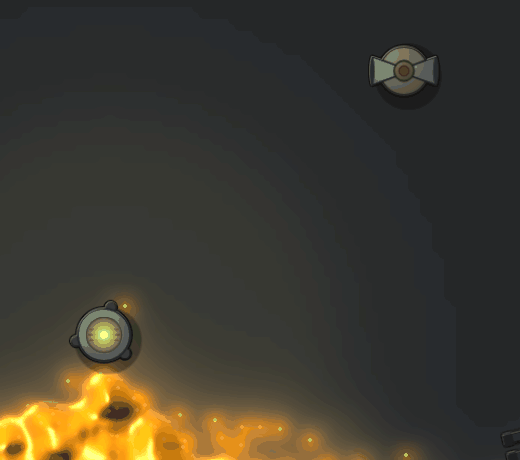
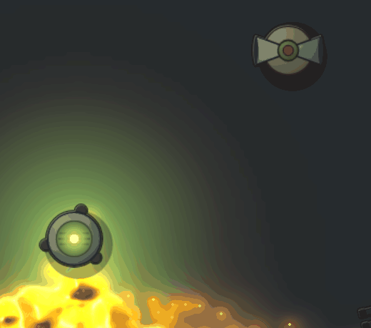
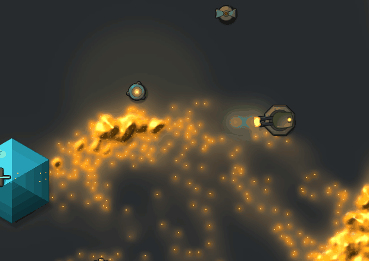
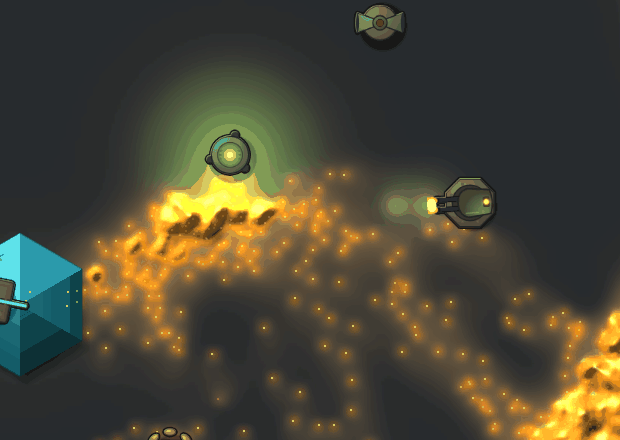
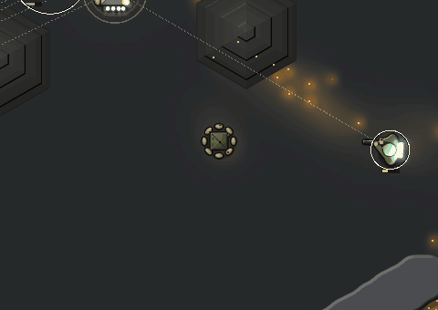
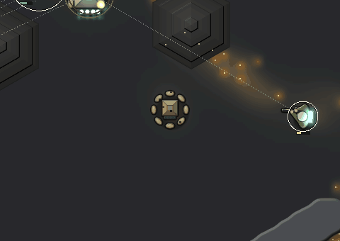
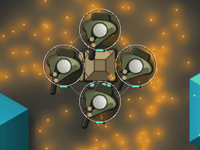
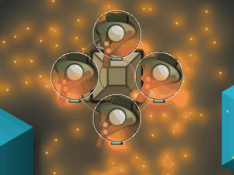
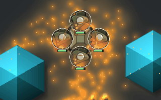
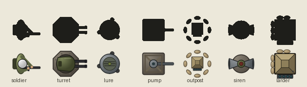

<title>Buildings That Show Their Work</title>
<meta name="claude:viewport-fit-sides" content="cover">
<link rel="stylesheet" href="https://fonts.googleapis.com/css2?family=Space+Grotesk:wght@500;700&family=Inter:wght@400;600&family=JetBrains+Mono:wght@400&display=swap">
<style>
/* Layout: one column of before/after pairs, the counts beside each pair. */
:root {
  --bg: #f3f1ea; --fg: #1d1c18; --muted: #5d5a50; --line: #d6d1c2; --panel: #e9e5d8; --accent: #6b7a3a;
  --display: "Space Grotesk", system-ui, sans-serif; --body: "Inter", system-ui, sans-serif; --mono: "JetBrains Mono", ui-monospace, monospace;
}
@media (prefers-color-scheme: dark) { :root:not([data-theme="light"]) { --bg: #16150f; --fg: #ece8da; --muted: #a8a390; --line: #34322a; --panel: #1f1e17; --accent: #a8b86c; color-scheme: dark } }
:root[data-theme="dark"] { --bg: #16150f; --fg: #ece8da; --muted: #a8a390; --line: #34322a; --panel: #1f1e17; --accent: #a8b86c; color-scheme: dark }
body { background: var(--bg); color: var(--fg); font: 15px/1.55 var(--body); }
main { max-width: 1100px; margin: 0 auto; padding-block: 28px 60px; padding-left: max(16px, env(safe-area-inset-left, 0px)); padding-right: max(16px, env(safe-area-inset-right, 0px)); display: grid; gap: 34px; }
h1, h2 { font-family: var(--display); text-wrap: balance; margin: 0; }
h1 { font-size: 30px; }
h2 { font-size: 20px; }
p { margin: 0; max-width: 70ch; }
.lede { color: var(--muted); }
section { display: grid; gap: 12px; border-top: 1px solid var(--line); padding-top: 20px; }
.pair { display: grid; grid-template-columns: 1fr 1fr; gap: 14px; }
@media (max-width: 760px) { .pair { grid-template-columns: 1fr; } }
figure { margin: 0; display: grid; gap: 6px; min-width: 0; }
figure img { width: 100%; border-radius: 4px; background: var(--panel); }
figcaption { font-size: 13px; color: var(--muted); }
.tag { font: 11px var(--mono); letter-spacing: .08em; text-transform: uppercase; color: var(--accent); }
ul { margin: 0; padding-left: 20px; max-width: 75ch; }
code { font: 13px var(--mono); }
</style>
<main>
  <header style="display:grid;gap:8px">
    <span class="tag">Larder World · buildings and bites · 2026-11-14</span>
    <h1>Buildings that show what they are doing</h1>
    <p class="lede">The art director's next item after the turret: bring the lure, pump, outpost and siren up to the turret's standard, each showing its work from the game's state, then soldiers' hit reactions. Fork map, seed 1, headless on llvmpipe at 1280×800, cropped. Left is main, right is this change. Buildings stand whole from the start (<code>pump=55,224 lure=95,200 siren=120,178 outpost=85,250 turret=135,208</code>).</p>
  </header>

  <section>
    <h2>Lure and siren, zoom 12</h2>
    <p>0:07.5 to 0:09.5. <b>Lure:</b> while it burns food, its scent is lit green, and the green is the engine's scent field itself (the look's scent byte), not a painted disc. It spreads while the lure burns and fades as the field does when it stops. The mould already bends toward it. <b>Siren:</b> it calls every 4 s while switched on, which happens once in this clip at 0:08.0. On each real call the lens and horns flare red, two rings run out to the alarm's reach (15 cells, <code>siren_r</code>) and fade over 0.7 s, and a red light falls on the ground. Main lit the horns' arcs whenever the siren was on, which said nothing about when it called.</p>
    <div class="pair">
      <figure><figcaption>Main · lure lamp only, siren arcs whenever it is on</figcaption></figure>
      <figure><figcaption>This change · scent field lit green, one call at 0:08.0</figcaption></figure>
    </div>
  </section>

  <section>
    <h2>All five, zoom 6</h2>
    <p>0:06 to 0:10.5. Every building is now drawn one touch radius across, at least 11 pixels, the same scale as a soldier. Before, they were 0.7, smaller than a soldier, and only the turret had been raised. The larder went from 1.6 to 2.2 cells so it stays the biggest. <b>Pump</b> (on the crystal at left): it turns whole so its hose points into its crystal. A line of charge runs from the crystal's middle to the hose, as bright as this frame's draw (<code>Building::drew</code>) against a full pump's, so it dims as the crystal runs dry. The pump drew 50 food in 10 s here.</p>
    <div class="pair">
      <figure><figcaption>Main · 0.7 touch radii, pump hose fixed east</figcaption></figure>
      <figure><figcaption>This change · soldier-scale, hose into its crystal, scent and call</figcaption></figure>
    </div>
  </section>

  <section>
    <h2>Outpost, zoom 6</h2>
    <p>Farm hand, an outpost at (275, 140) between the right crystal and the larder, 0:31.5 to 0:33.5. The outpost is now a mini larder in its sandbag ring: the larder's roof, cell rack and lamp at 0.55 scale. A carrier that banks there flares its cells cyan for 0.6 s, which happens once in this clip at 0:32.4. The window now flares whichever drop-off the load went into, found from the carrier emptying its pack beside it. Main flared the larder whenever the harvest rose, including a pump's draw or a load banked at an outpost.</p>
    <div class="pair">
      <figure><figcaption>Main · olive tent, never lit</figcaption></figure>
      <figure><figcaption>This change · flares at 0:32.4 as a carrier banks</figcaption></figure>
    </div>
  </section>

  <section>
    <h2>Bites, zoom 12 and 6</h2>
    <p>The idle squad at the larder as the mould reaches it, 0:06 to 0:08. Each walker touching a soldier bites 2 hp a second (<code>Rules::drain</code>), and here 3.2 walkers touch a soldier on average, up to 7. Every 3 hp of real damage (<code>FLINCH_HP</code>), the soldier jerks back a fifth of its radius from the bite and eases home over 0.2 s. The side the bite came from flushes hot, and a hot light falls there. The bite's side is the densest mould in its sight (<code>Soldier::aim</code>), else the mould's core. A soldier at a body's edge flinches now and then, and one wading in flinches several times a second.</p>
    <div class="pair">
      <figure><figcaption>Main · no reaction but the health bar</figcaption></figure>
      <figure><figcaption>This change · flinch, hot flush and light per 3 hp</figcaption></figure>
    </div>
    <div class="pair">
      <figure><figcaption>This change · zoom 6</figcaption></figure>
      <figure><figcaption>Silhouettes from the atlas: soldier, turret, lure, pump, outpost, siren, larder. Each reads apart in black alone.</figcaption></figure>
    </div>
  </section>

  <section>
    <h2>Cost</h2>
    <ul>
      <li>llvmpipe, paired <code>bench=30 hand=build</code>, main then this change: GPU tail p50 80.3 → 82.5 ms, frame p50 89.5 → 92.7 ms, one pair, within the run-to-run spread seen on the turret pair (±4 ms). Per pixel, it adds one scent sample under each burning lure's light and a dot product on a bitten soldier. The 1070 timing waits for the PC.</li>
    </ul>
  </section>
</main>
